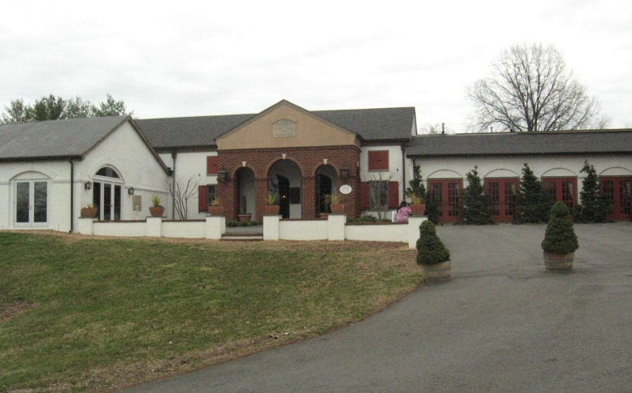

|
North America >
USA >
Virginia >
Orange County >
Barboursville Vineyards
Barboursville Vineyards
Barboursville, VA

Founded by Italians in 1976, Barboursville Vineyards was the first in Virginia to focus exclusively on European grape varietals. Their huge
tasting room is often abuzz with visitors and $4 tasting fee buys a glass which can be re-used anytime one returns.
www.barboursvillewine.com
Whites:
Virginia Cabernet Blanc
NV
Virginia Chardonnay
2006
Virginia Pinot Grigio
2006
Virginia Riesling
2007
Virginia Sauvignon Blanc
2007
2010
Virginia Viognier Reserve
2006
Ros�:
Virginia Ros�
2006
Reds:
Virginia Barbera Reserve
2006
Virginia Cabernet Franc Reserve
2005
Virginia Cabernet Sauvignon
2005
Virginia Cabernet Sauvignon Reserve
2005
Virginia Malvaxia Passito
2004
Virginia Merlot
2006
Virginia Nebbiolo Reserve
2004
Virginia Octagon
2004
Virginia Sangiovese Reserve
2006
|